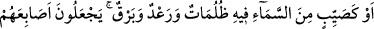
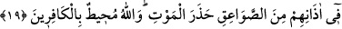

et-Te’vîlâtü’n-Necmiyye’de der ki:
Bakara sûresinin 17. ve 18. âyetlerinde şuna işâret edilmektedir: Başlangıç hâli güzel
olan mürîd, bir müddet irâdesini terbiye etme yoluna girip epey bir zaman sohbetin
şiddetli sıkıntılarına katlanarak müridlik nûruyla nûrlanır. Öyle ki, içinde talep ateşi
tutuşur ve bu ateş çevresini aydınlatır. Bu sûretle mürîd, saâdet ve şakâvet sebeblerini
öğrenerek kendisini kurtaracak olan sohbet ipine yapışır, hizmete sarılır, dünyâdan
uzaklaşır. Nefsinin arzu ve isteklerini kesmeye yönelir. Kalb safâsından şevk parıltıları
doğar ve rûh nûrlarından zevk şimşekleri çakar. Bu noktaya ulaşan mürîd, nefsinin
hîlesine aldanarak Allah’ın mekrinden emin olmağa başlar ve nefsin tuzağına düşer. Bir
anda kendini vesvese ve evhâmların içinde bulur. Dünyâ zevk ve nasîblerine tekrar
döner. Güneşi kaybolur, nefsi karanlıklar içinde kalır. Vuslattan önce visâl ipi kopar.
Girmiş olduğu cennetten çıkar. Usanç ve bıkkınlıkla çok kötü bir duruma düşer. Nitekim
bu konuda Allah Teâlâ hazretleri: “Halbuki o gün onlar için, Allah tarafından, hiç
hesâba katmadıkları şeyler ortaya çıkmıştır.” (ez-Zümer, 39/47) buyurmaktadır.
Onların, mîsâk günü Allah Teâlâ’nın hitâbını duyan kalb kulakları sağır, Rablerine
“evet, sen bizim Rabbimizsin” diye cevap veren ağızları dilsiz, O’nun rubûbiyet
cemâlini müşâhede edip onu tanıyan gözleri kördür. Bu sebeble onlar, değil cennetteki
menzillere; daha önce içinde bulundukları ünsiyet bahçelerine bile dönemezler. Çünkü
onlar, mîsâk günü gayb âlemine açık olan kalb kapılarını, arzularına uymak, dünyâ
lezzetlerine kapılmak, nifak ve hîle yollarına sapmak sûretiyle kapatmışlardır.
Bu sebeble “Kudsiyet” yönünden onların üzerine asla rüzgâr esmemiş, onlar da
rûhların nefhalarından hiçbir koku alamamışlar ve kalbleri hasta olmuştur. Sonra Allah
Teâlâ’nın: “Biz, Kur’ân’dan öyle bir şey indiriyoruz ki o, mü’minler için şifâ ve
rahmettir.” (el-İsrâ, 17/82) şeklinde ifâde buyurduğu üzere, beraberlerinde hastalıklara
devâ bulunan doktorlar göndermiştir.
Kur’ân’ı kabûllenen mü’minler, gönderilen bu doktorları tasdîk etmişler ve onların
tavsiye ettikleri devâları kabullenmişlerdir. Nefislerine zulmederek doktorları tasdik
etmeyen ve verdikleri ilaçları kullanmayanlar için ise devâ hastalık, şifâ da vebâ
olmuştur. İşte Allah Teâlâ: “(Şifâ olan bu Kur’ân-ı Kerîm) zâlimlerin ise yalnızca
ziyanlarını artırır.” (el-İsrâ, 17/82) buyurmakla bunu ifâde etmiştir. Bu gibi kimseler,
rahmet ehli olmaktan kaçtıkları için sağırlık ve körlüğü mûcib olan bir lâ’nete ma’rûz
kalmışlardır. Bu konuda Allah Teâlâ’nın şu beyânı vardır: “İşte bunlar, Allah’ın
kendilerini lâ’netlediği, bu yüzden kulaklarını sağır ve gözlerini kör kıldığı
kimselerdir.” (Muhammed, 47/23)